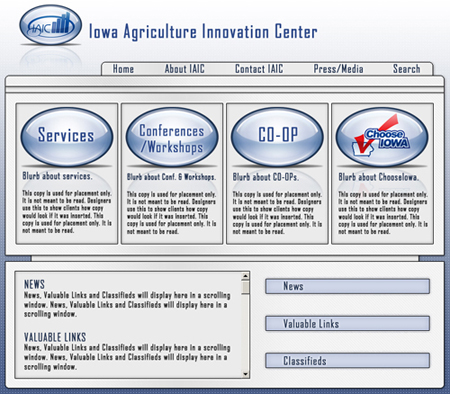

Alcune Opere Grafiche
Some Graphic Works
Branded desktop browser version of the IAIC site.
IAIC was a Non-Profit created through grants from the Department of Agriculture to support new and existing Agri-Business owners in their efforts to expand and grow value-added ag based businesses in Iowa. IAIC was instramental in intiating and strengthing interest in Biodiesel, Ethanol and Wind Energy in Iowa.


This is the navigational flow of the IAIC mobile application.


The IAIC mobile application had nine screens and was designed in Adobe Photoshop and Adobe XD.


Custom templates for an open-source CMS. Adobe Photshop, Adobe Illustrator, HTML, CSS, PHP, JS.


Business cards.